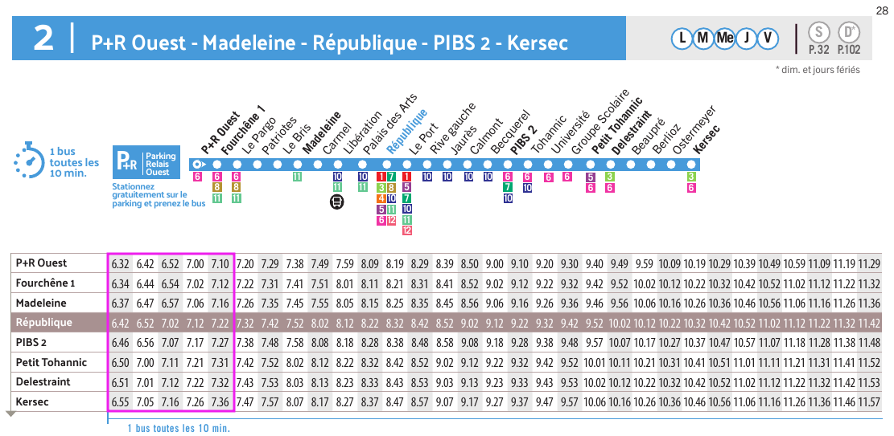

Date: 21/02/23
Auteur: Paul Schuhmacher
Version: 2
Merci de lire attentivement les consignes !
Publier votre travail sur un dépôt git
public (GitHub, Gitlab, BitKeeper, etc.) et fournir le
lien du dépôt. Le dépôt contiendra les scripts MySQL et un
fichier README donnant les instructions pour installer et
utiliser votre projet.
Penser à utiliser un
.gitignorepour éviter de pousser sur votre dépôt le contenu denode_moduleset du dossierdbcontenant le volume docker de la base de données!
Déposez ensuite votre travail sur le devoir Teams crée à cet effet. Voici les consignes sur le document à rendre :
evaluation2_x_abc.pdf, où x est la première
lettre de votre nom et abc votre prénom (je soumettrai donc
le sujet evaluation2_s_paul.pdf ). Merci d’indiquer aussi
votre nom et prénom dans le document !Dans le document PDF :
Vous devez rendre votre travail avant la date butoir fixée ensemble sous peine de pénalité : 1 point le premier jour de retard, 2 points le deuxième jour de retard, et ainsi de suite jusqu’à un minimum de 0.
Le projet est noté sur 30 (ramené sur 20), coefficient 2.
README.md
(Markdown) bien formé (voir les
instructions ci-dessous). Les commandes à effectuer doivent être
indiquées. Les consignes sont respectées, les scripts SQL sont
commentés. Le texte a été corrigé par un outil de correction
automatique.Ne pas répondre à une question bonus n’est pas pénalisant. Cela n’apporte que des points en plus.
L’URL de votre dépôt. Votre dépôt doit contenir a minima :
README.md avec les sections suivantes :
.sql) : schema.sql,
data.sql et queries.sqlLe dictionnaire des données n’est pas obligatoire ici, un MCD clair et éventuellement commenté suffira. Vous êtes encouragés à l’écrire tout de même en guise d’exercice.
Un dépôt sur le web est un site web et le fichier
README.mden est sa page d’accueil. Soignez-le pour aider vos utilisateur·ices (et vous-même !) à (ré)utiliser votre projet.
Vous devez modéliser une partie de la base de données de la société Kicéo, en charge des transports en commun de Vannes. La base de données doit permettre de mémoriser et retrouver les horaires de toutes les lignes de bus de la ville.
Votre système d’information doit être capable de produire à la demande les horaires d’une ligne. Par exemple, voici les horaires de la ligne 2 aux arrêts principaux :

Source de l’image (accéder au PDF complet), téléchargeable sur le site web de Kiceo
schema.sql contenant toutes les instructions pour
générer votre base de données uniquement. Le script doit permettre de
regénérer le schéma à volonté en une seule commande. Fournir la
commande (avec le programme mysql) à executer pour
régénérer le schéma, comme indiqué dans les consignes. Tip: Penser à
DROP les tables avant de les créer et à utiliser
IF NOT EXISTS.data.sql qui permet
d’insérer le jeu de données de la ligne 2 (horaires aux
arrêts principaux de la ligne 2 pour les jours de semaine, etc.). Le
script doit permettre de régénérer le jeu de données à volonté en
une seule commande. Fournir la commande (avec le programme
mysql) à executer pour régénérer le jeu de données, comme
indiqué dans les consignes. Tip: Penser à DELETE les
anciennes données lors de la régénération.Une fois votre base conçue et contenant les données indiquées, créer
un fichier queries.sql contenant les requêtes SQL répondant
aux besoins suivants :
Sorties attendues :
+----------------------------------------+
| Horaires à l'arrêt Madelaine (Lundi) |
+----------------------------------------+
| 06:37:00 |
| 06:47:00 |
| 06:57:00 |
| 07:06:00 |
| 07:16:00 |
+----------------------------------------++------------------------------------------+
| Horaires à l'arrêt République (Lundi) |
+------------------------------------------+
| 06:42:00 |
| 06:52:00 |
| 07:02:00 |
| 07:12:00 |
| 07:22:00 |
+------------------------------------------+ONLY_FULL_GROUP_BY
par défaut avec l’instruction :SET sql_mode=(SELECT REPLACE(@@sql_mode,'ONLY_FULL_GROUP_BY',''));Désactiver ce mode permet notamment d’utiliser
ORDER BY sur une colonne même si cette colonne n’est pas
utilisée dans le GROUP BY. Il vous revient la charge de
vous assurer que la valeur utilisée pour ordonner soit bien unique pour
chaque groupe, au risque d’obtenir des résultats non
déterministes.
Sortie attendue :
+-----------------------------------------+
| Parcours de la ligne 2 Direction Kersec |
+-----------------------------------------+
| P+R Ouest |
| Fourchêne1 |
| Madelaine |
| République |
| PIBS 2 |
| Petit Tohannic |
| Delestraint |
| Kersec |
+-----------------------------------------+schema.sql."Arrêt temporairement non desservi.". Tip: utiliser
l’instruction CASE.
Voici la syntaxe générale :SELECT
colonne1,
CASE
WHEN condition THEN valeur_si_vrai
ELSE valeur_si_faux
END AS resultat
FROM
votre_table;+------------------------------------------------------------------------------+
| Horaires à l'arrêt Petit Tohannic (Lundi) |
+------------------------------------------------------------------------------+
| L'arrêt n'est pas desservi. Veuillez vous reporter à l'arrêt Delestraint. |
+------------------------------------------------------------------------------+GROUP_CONCAT.Sortie attendue :
+-----------------------+--------------------------------------------------------------------------------------+
| Ligne | Arrêts desservis |
+-----------------------+--------------------------------------------------------------------------------------+
| 2 Direction Kersec | P+R Ouest,Fourchêne1,Madelaine,République,PIBS 2,Petit Tohannic,Delestraint,Kersec |
| 2 Direction P+R Ouest | Kersec,Delestraint,Petit Tohannic,PIBS 2,République,Madelaine,Fourchêne1,P+R Ouest |
+-----------------------+--------------------------------------------------------------------------------------+Durant le cours nous avons évoqué les indexs mais n’avons pas abordé comment ils sont fabriqués et comment ils améliorent la lecture dans une base de données. Réaliser un mini travail de veille sur l’utilisation des indexs dans une base de données MySQL. Présenter en quelques lignes : le principe de fonctionnement et la différence entre un index de type B-Tree et Hash. Vous pouvez vous aider d’un schéma. (3pt)
Étant donnés les besoins actuels sur votre base, et d’après sa structure, sur quelles colonnes serait-il judicieux de créer des indexs ? Pourquoi ?
Écrire une procédure stockée
insert_schedule(time_start ,time_end, step) permettant
d’insérer des horaires, minute par minute dans une table
schedule. Sortie attendue :
CALL insert_schedule('06:32', '06:41', '0:01');
SELECT horaires FROM schedule:
+----------+
| horaires |
+----------+
| 06:32:00 |
| 06:33:00 |
| 06:34:00 |
| 06:35:00 |
| 06:36:00 |
| 06:37:00 |
| 06:38:00 |
| 06:39:00 |
| 06:40:00 |
| 06:41:00 |
+----------+Voici un template de dictionnaire des données avec quelques exemples.
| Libellé | Code | Type | Longueur | Obligatoire ? | Regle de calcul/Contrainte/Commentaire |
|---|---|---|---|---|---|
| Date de commande | date | D | 6 | Oui | Format jjmmaa, jj de 01 à 31, mm de 01 à 12 |
| Quantité commandée | qtite | N | 3 | Oui | > 0 |
| Rue du client | rue_cli | AN | 30 | Oui | |
| Ville du client | ville_cli | A | 30 | Oui | |
| Code postal du client | cp_cli | AN | 5 | Oui | |
| Adresse du client | adresse_cli | 60 | 30 | Oui | adresse_cli = rue_cli + ville_cli + cp_cli |
| Numéro de téléphone fixe du client | tel_dom_cli | AN | 14 | Non |
Remarques :
La colonne Longueur indique la taille de la
donnée en octet/byte. Un caractère (ASCII) est généralement encodé sur
un octet. Pour un entier, cela indiquera le nombre d’octets sur lequel
il est encodé. Un entier de longueur 1 permet de créer
codes, donc de 0 à 255. En MySQL, c’est un TINYINT. Un
entier de longueur 4 permet de créer
codes, donc de 0 à 4294967295. En MySQL, c’est un
INT.
Type : Alphabétique, Numérique, AlphaNumérique, Booléen, Date
adresse_cli = rue_cli + ville_cli + cp_cli indique
que adresse_cli est calculée à partir de
rue_cli, ville_cli et
cp_cli.